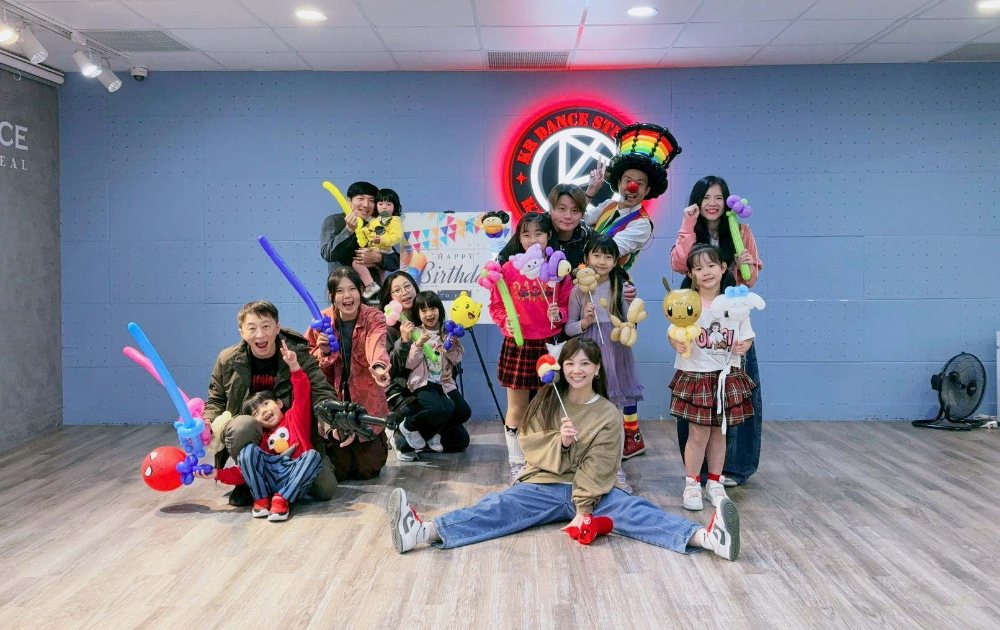
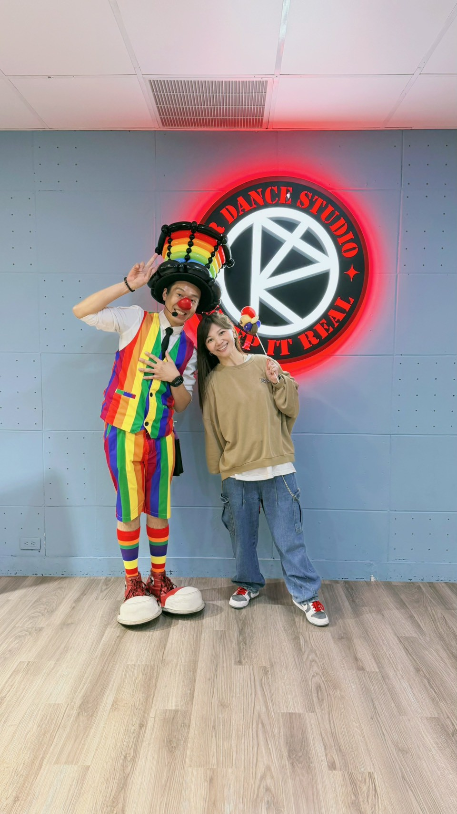
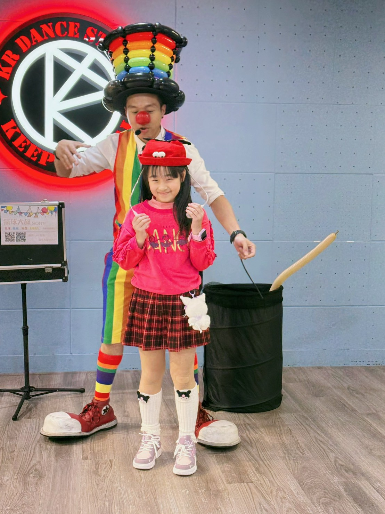
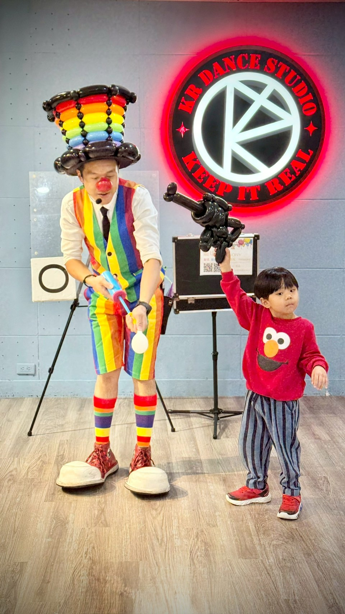
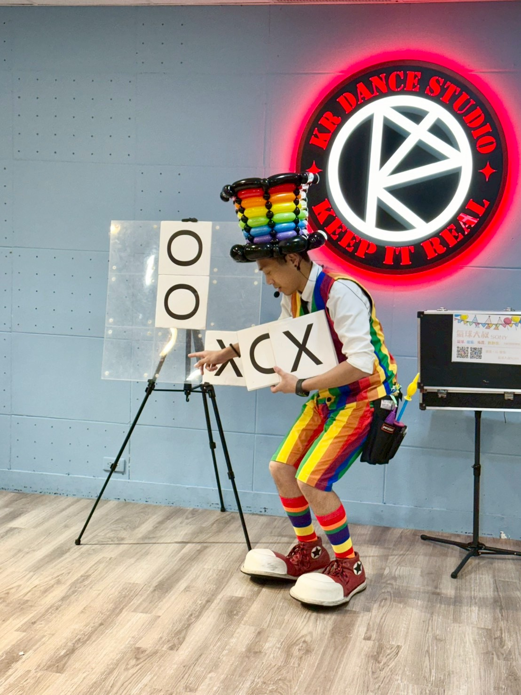
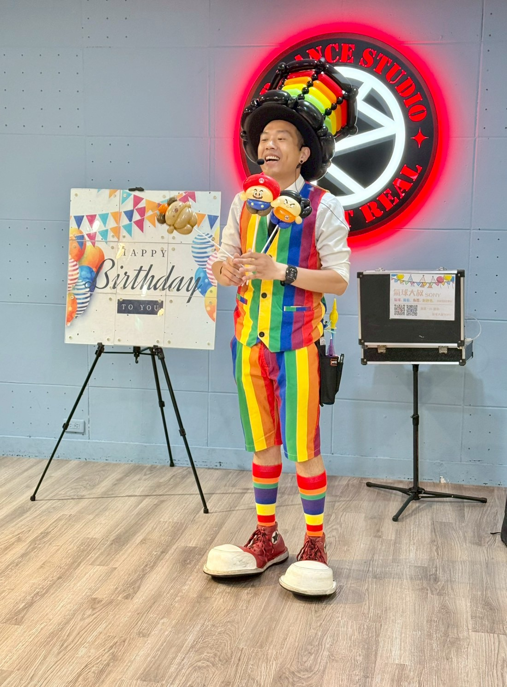

台北大安區生日派對表演推薦｜KR Dance Studio 氣球魔術互動秀精采實錄
在華視大樓內的驚喜派對！心靈預言魔術秀、壽星妹妹上台橋段、造型氣球派送，全場孩子尖叫不斷
📍 地點：台北市大安區光復南路116巷7號3樓 (KR Dance Studio / 華視大樓)

🎈 本場活動服務重點
- 活動類型：私人生日派對 (Birthday Party)、兒童慶生表演
- 服務內容：生日互動氣球、魔術演出、造型氣球派送
- 適合對象：3-10 歲兒童、家長、舞蹈教室學員
- 場地特性：室內舞蹈教室，適合近距離互動與高畫質拍照
- 可延伸搭配：慶生背板佈置、迎賓演出、互動式氣球教學
活動現場氛圍：舞蹈教室變身奇幻舞台
這次受邀來到位於台北大安區光復南路的 KR Dance Studio。這裡是一個專業且充滿活力的舞蹈推廣交流空間。寬闊的木地板提供了絕佳的表演視野。當我踏入會場時，已經感受到壽星家長與主辦單位的用心策劃，整個空間本身就帶有很好的參與感。

對表演者來說，這種場地最重要的，不只是能不能演，而是能不能讓觀眾自然靠近。當天，從孩子們進場、家長停下腳步，整個空間自然轉化為一個充滿奇幻感的近距離舞台劇場。這種親子活動最迷人的地方，就是你會發現真正被打開的，不只是一群孩子的注意力，而是整個現場的氛圍。
表演亮點：讓壽星妹妹成為主角，與孩子們的尖叫對話
派對的重頭戲是安排 30 分鐘的精彩表演。我刻意讓每一段互動都有情緒起伏，讓大家不只是單純欣賞，而是全程參與。前段先用造型氣球讓孩子們直覺投入，中段再慢慢堆高驚喜感。

當天的亮點之一，是穿著紅衣服、格紋裙的壽星妹妹上台成為「魔術助手」。我不只是變魔術給孩子看，更讓壽星成為魔術師的一部份。看著她認真投入的模樣，對家長來說，這就是最值得拍照紀錄的珍貴畫面。
另一個讓全場孩子尖叫的，就是造型氣球派送。我特別準備了造型氣球槍。當紅色 Elmo 衣服小男孩拿到氣球機關槍，高舉著神氣模樣，整場的熱情再次被推向最高潮！這類型演出最迷人的地方，就是看到孩子們因為一個氣球，而露出最純粹的快樂。

OOXX 井字遊戲互動魔術：預言成真的 Happy Birthday 驚喜
當天表演最大的驚喜，是我安排的 **OX 井字遊戲互動魔術**。我先讓孩子們自由地擺放 X 與 O 在黑白板面上。孩子們專注地投入選位遊戲，過程充滿問答與參與感。

看似隨機擺放的結果，沒想到翻開背面的預言板，竟然出現了一幅完整的祝賀圖案。我設計的預言背板完美地顯示出 **「Happy Birthday」**。這種心靈互動魔術的震撼力，讓在場的家長們也忍不住驚呼與鼓掌。這就是互動、驚喜與節奏感，缺一不可的真實活動成果。

這類型活動適合哪些場合？預約建議：想讓效果更好，前期規劃很重要
如果您也正在規劃私人生日派對、抓週活動或精緻親子主題派對，這樣的內容非常適合。它兼具聚客效果、互動效果與拍照效果，既能讓現場熱起來，也能讓主辦方的活動畫面更完整。
很多人以為表演就是當天來演，但實際上，真正讓效果拉高的常常是前期規劃。像是觀眾年齡層、場地大小、動線安排、是否需要搭配背板與氣球佈置，這些都會影響最後呈現。如果能先把需求整理清楚，表演內容就能更精準地對應活動目標，現場自然會更順、更有記憶點。
💡 關於台北生日派對表演的常見問題
- Q: 台北生日派對表演安排幾分鐘比較適合？
- A: 大多數兒童生日派對，安排 30～40 分鐘 會是最剛好的長度。這個時間足夠完成開場暖場、互動魔術、壽星橋段與氣球派送，也比較符合孩子在室內活動中的專注節奏。
- Q: 像 KR Dance Studio 這種室內舞蹈教室，適合什麼類型的表演？
- A: 很適合 近距離互動式氣球魔術秀。因為室內空間較集中，孩子比較容易投入，家長也能清楚看到互動畫面，特別適合生日派對、親子慶生會與小型家庭聚會。
- Q: 氣球大叔在慶生會上會提供壽星特別的禮物嗎？
- A: 當然！每一場生日派對我都會為壽星設計專屬的大型氣球禮物或特別的魔術互動環節。例如在這次活動中，我帶領壽星妹妹一起完成『預言魔術』，並讓每一位參與的孩子都能帶著心滿意足的造型氣球回家，留下難忘回憶。
🎯 正在尋找台北生日派對表演嗎？
如果您希望活動不只是有流程，而是真的有氣氛、有互動、有記憶點， 氣球大叔 Sony 提供的演出與情境設計，能依照不同活動類型客製安排。
- 私人生日派對、抓週派對：互動表演、氣球派送、拍照亮點一次到位。
- 百貨商場活動：舞台表演、假日聚客、週年慶造勢。
- 品牌行銷推廣：快閃活動、門市開幕、VIP 客戶派對。
📅 本文包含 6 張現場照片紀錄，為真实活動案例與服務規劃參考。